Efecto de Batido en Señales sub Nyquist
Pablo Panitta
Introducción
El presente trabajo tiene por objetivo el estudio de los efectos en señales cuyas frecuencias se encuentre en la vecindad inferior a la de Nyquist (llamadas sub-Nyquist). Comenzaremos analizando la interacción entre dos señales analógicas y los efectos que se presentan. Luego analizaremos lo que ocurre en el ámbito digital con una señal en la proximidad con la frecuencia de Nyquist. Se abordarán las implicancias en la representación gráfica de las señales y su impacto en la conversión D/A para su reproducción.
1. Suma de dos señales analógicas
Supongamos que tenemos 2 señales senoidales analógicas y las sumamos. ¿Qué resultado veremos en la pantalla de un osciloscopio? Si la diferencia entre ambas frecuencias es grande (digamos superior a 10 veces), veremos que la senoidal de mayor frecuencia se encontrará superpuesta sobre la de baja frecuencia.
Pero a medida que dicha diferencia se achica, comenzaremos a apreciar cada vez mas, que la senoide de mayor frecuencia se encuentra “batida” por la de menor frecuencia.
En las Fig 1, Fig 2, Fig 3 y Fig 4 se pueden apreciar los efectos recién mencionados.
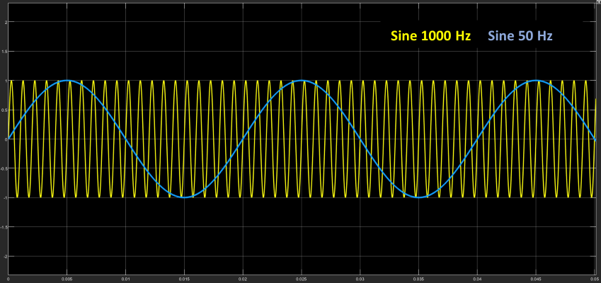
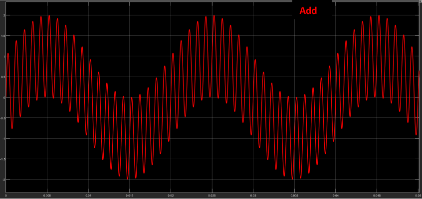
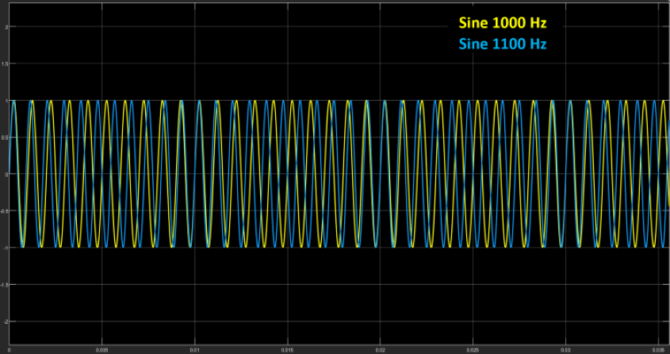
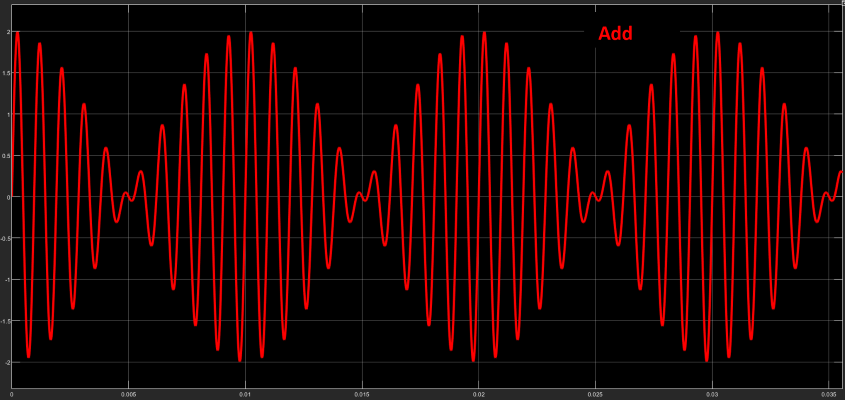
Interesante notar el efecto que tiene la fase en la suma de señales para ambas combinaciones. Mientras la misma no juega un papel importante cuando la diferencia de frecuencias es grande, sí lo hace cuando son frecuencias cercanas, produciendo cancelaciones o refuerzos en la magnitud de la suma.
Observar que la frecuencia de batido es igual a la diferencia de frecuencias entre ambas señales (en este caso 100Hz).[1][1]
En ambos casos, en un análisis espectral, veré las dos frecuencias senoidales puras y nada más.
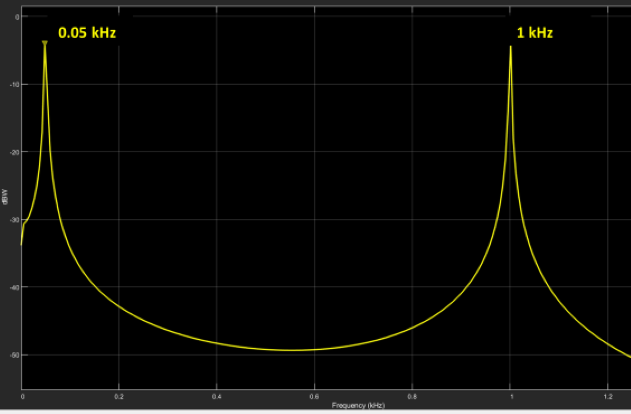
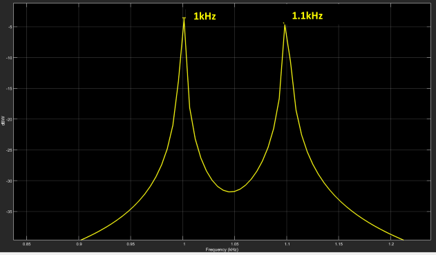
Fig 5. Espectro de señales a) Escenario1 , b) Escenario2
2. Batido en ámbito digital
Supongamos ahora, que tenemos una señal analógica y procedemos a muestrearla para su digitación. A los fines de la demostración, tomemos los siguientes valores:
- Frecuencia de la señal: 500 Hz
- Frecuencia de muestreo: 44.1kHz
En la Fig 6 podemos ver que la señal muestreada, se encuentra perfectamente por sobre la señal analógica, no presentando desvíos de magnitud.
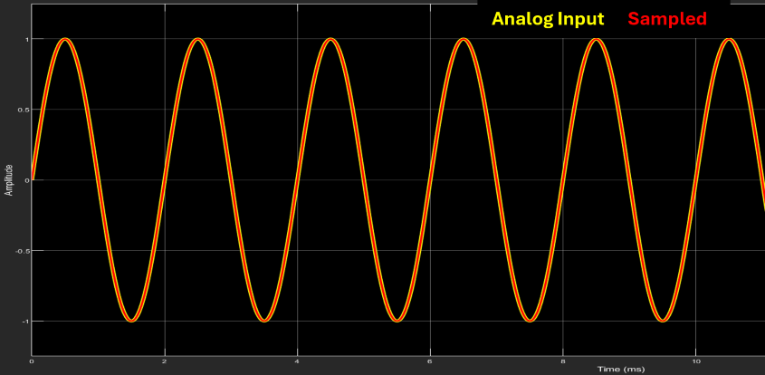
Repitamos el proceso, pero ahora con una frecuencia cercana a la de Nyquist, por ejemplo a una frecuencia de la señal: 20 kHz

En la Fig 7 podemos apreciar claramente un efecto de batido sobre la señal de 20kHz. Esto se ve muy parecido al efecto descripto en la sección anterior con 2 frecuencias analógicas. Pero si aquí estamos trabajando solo con 1 frecuencia… ¿cómo puede estar ocurriendo esto?
Tratemos de entender qué está pasando en este caso. Tengo una señal analógica a la entrada de 20kHz que al muestrearla a una tasa de 44.1kHz y que luego, al volver a convertirla a analógica[2][2], se presenta como una señal de 20kHz pero con un batimento a 4.1kHz. Todo daría a pensar que, por lo visto anteriormente, debería existir otra señal tal que “module” a la de entrada para dar como resultado, la señal modulada. Pues confirmemos esto en un analizador de espectro.
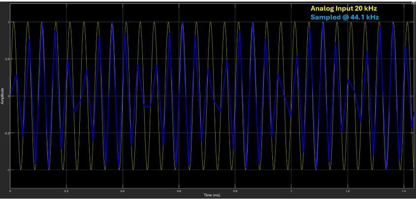
Sin lugar a dudas, la Fig 8 solo evidencia la existencia de 1 señal! Esto no parece tener mucho sentido. Existe una sola señal presente en el espectro pero que, sin embargo, en el dominio del tiempo muestra síntomas claros de una modulación en amplitud (batido) que solo podrían darse cuando existiese otra señal interactuando.
¿Y entonces?
3. Distribución de las muestras en una señal.
Supongamos que muestreo una señal de frecuencia F a una tasa de muestreo \( F_s = 3F\). Lo que obtendría sería la presencia de 3 muestras por ciclo de señal y que, además, ocurrían siempre en la misma fase de misma. O sea, se crea un patrón periódico, como podemos observar en la Fig 9
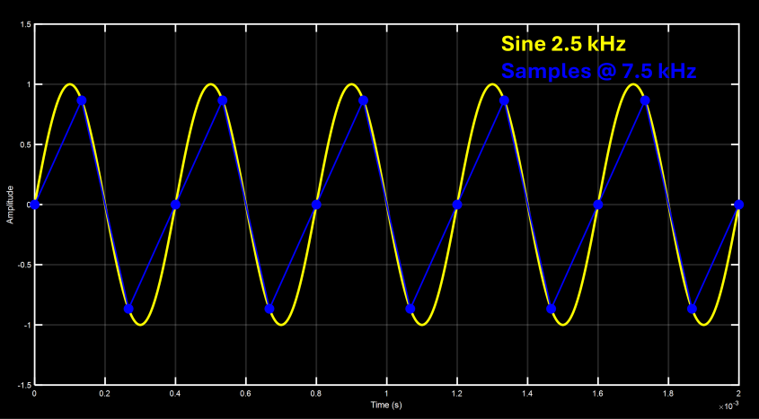
Y si hiciésemos lo propio, pero ahora con \( F_s = 5F\), habría 5 muestras por ciclo de señal, con las mismas características indicadas para la señal anterior, como se puede apreciar en la figura de a continuación.
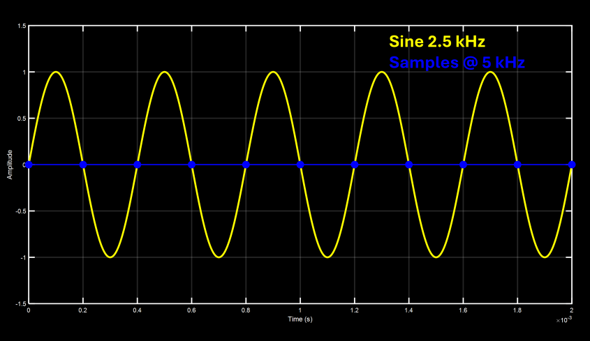
Una particularidad que tienen los ejemplos recién enunciados es que la cantidad de muestras por ciclo de señal es invariante. Esto quiere decir que, por ejemplo, en \( F_s = 3F \), existirán en cualquier ciclo de la señal 3, y solamente 3, muestras. No encontraré ciclos en donde existan 2, 4 u otro valor distinto de 3. O sea que existe una relación entre F y \( F_s \) que la podemos representar por la siguiente ecuación:
\[ {\large F = \frac{1}{n} \cdot F_s } \]Nuevamente, esto significa que cada 1 ciclo, voy a tener “n” (2, 3, 4, etc) y solo “n” muestras. No más, no menos.
Podemos generalizar la fórmula y reescribirla como:
Aquí m indica la cantidad de ciclos en los cuáles encontraré una cantidad n de muestras. Por ejemplo si la relación fuese \( \large\frac{2}{5} \) significaría que en 2 ciclos de la señal encontraré exactamente a 5 muestras.[3][3]
Pero existe otra característica que tiene una consecuencia muy importante y es la siguiente: : esas n muestras se producen en las mismas fases de la señal cada m ciclos. Siguiendo con el ejemplo anterior, las muestras volverán a caer en la misma fase de la señal cada 2 ciclos.
Pero ¿a dónde queremos llegar con esto? ¿Qué tiene que ver con lo que veo en la pantalla? Un poco más de paciencia que ya estamos más cerca.
4. Patrones cíclicos.
Adicionemos ahora un último parámetro a fórmula, llamado ε, de manera que resulte como indica la siguiente ecuación:
\[ {\large F = \frac{m}{n} \cdot F_s - {\Large \varepsilon}} \]
¿Qué logro con esta modificación? Anular la característica de posicionamiento fijo de las muestras dentro de ciclo de la señal. Aunque seguirá habiendo una cantidad de n muestras cada m ciclos, la ubicación de las mismas dentro de la señal irá variando a través de los ciclos.
Y ¿en algún momento volverán las muestras a caer en la misma fase de la onda? O sea ¿Existirá una frecuencia a la cual se repite el ciclo? La respuesta es sí, y justamente ese es el valor ε.
Observemos los gráficos de algunos ejemplos:
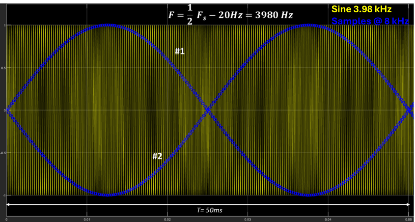
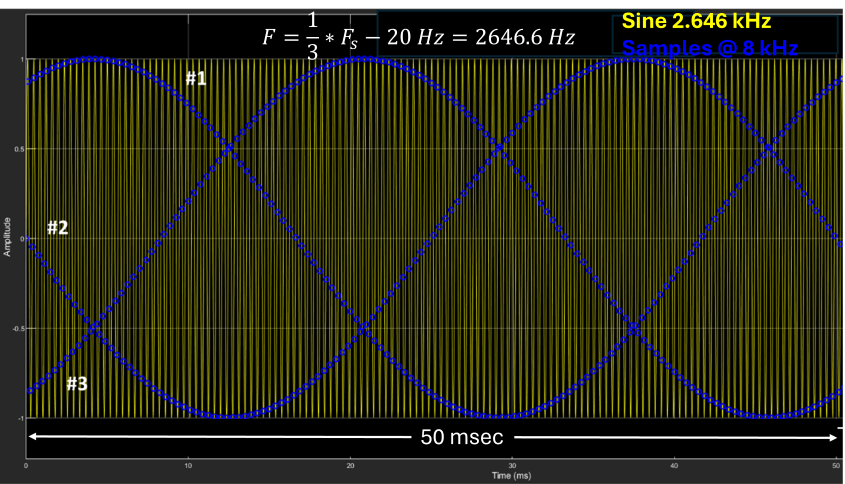
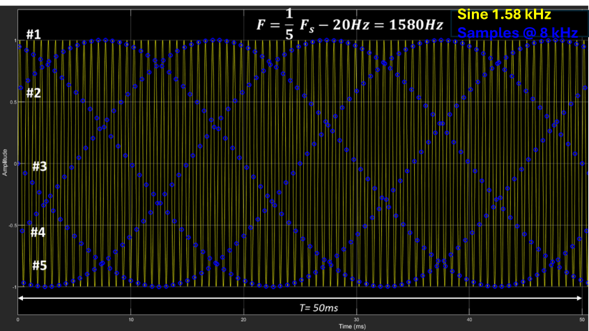
En la Fig 11 podemos observar la distribución de las muestras “formando” ondas senoidales cuya cantidad corresponde con el valor del factor “n” y de una frecuencia de valor ε.
O sea, en la fórmula \( F = {\large \frac{F_s}{2}} - 20 \) se formarán 2 ondas, en la \( F = {\large \frac{F_s}{3}} - 20 \), 3 ondas y en la \( F = {\large \frac{F_s}{5}} - 20 \), 5 ondas entrelazadas. Todas ellas tienen una frecuencia de 20 Hz (tal como es el valor ε).
Notar que estas ondas son productos de una distribución gráfica las muestras de la señal y todas poseen una frecuencia de ε. Quiere decir que ε, es la frecuencia a la cual las muestras vuelven a producirse en la misma fase de la señal. Es fácil notar que si ε=0, la frecuencia de variación es 0 y, por lo tanto, las muestras ocurren siempre en la misma fase de la señal.
5. Proceso de reconstrucción
Llama la atención el hecho que, si quisiera reconstruir la señal a través de la unión de las muestras, no estaría obteniendo la misma señal original. Tal como se observa en la Fig 12, si aplico el proceso de muestreo a una señal senoidal pura (A/D) y luego, a partir de esas muestras, reconstruyo la señal (D/A) uniendo las muestras, estaría llegando a una señal senoidal pero con batido, lo cual obviamente no es la misma señal original. Pero esto es una directa contradicción con el teorema de Nyquist, el cual afirma que, si cumplo la condición de muestrear a una tasa superior al doble de la máxima frecuencia presente, podría reconstruir la señal original de manera exacta.
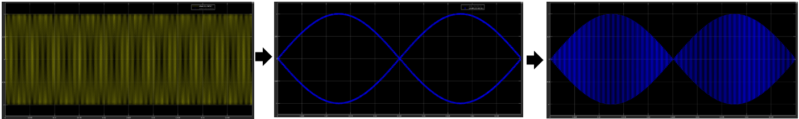
La explicación viene por el lado de cómo se realiza la reconstrucción de la señal analógica a partir de sus muestras. El proceso de interpolación consiste en reconstruir el valor de la señal entre muestras, y eso no se logra simplemente “uniendo” las muestras entre sí de manera gráfica. Existen diversas maneras de “unir” (interpolar) gráficamente las muestras. Por ejemplo, una podría ser la de hacerlo de forma lineal (línea recta), a través de un polinomio de orden N (curva), o algún otro tipo.[4][4][5][5]Pero esos métodos no reconstruyen exactamente la señal original.
El método teórico para recuperar totalmente una señal analógica (léase sin pérdidas), es a través de un proceso de convolución entre las muestras y la función SINC. Está totalmente fuera del alcance de este trabajo, explicar detalladamente el proceso de reconstrucción (interpolación), pero lo podemos pensar de la siguiente manera. Si, a una señal limitada en frecuencia (y que cumpla con los requerimientos de Nyquist) la quisiera recuperar, podría filtrarla con un filtro pasa bajo, de manera de quedarme con la banda de frecuencias por debajo de \( \frac{F_s}{2} \) y rechazar toda su componente espectral que esté por arriba de la misma. En la Fig 13 podemos ver el proceso.
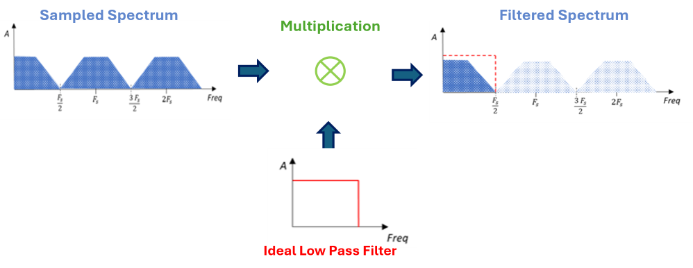
El mecanismo de este proceso de filtrado, pero visto desde el dominio del tiempo (recordar siempre la dualidad frecuencia – tiempo), significaría una convolución entre cada una de las muestras y la función SINC, que es la representación en el tiempo de una respuesta ideal de pasa bajo.
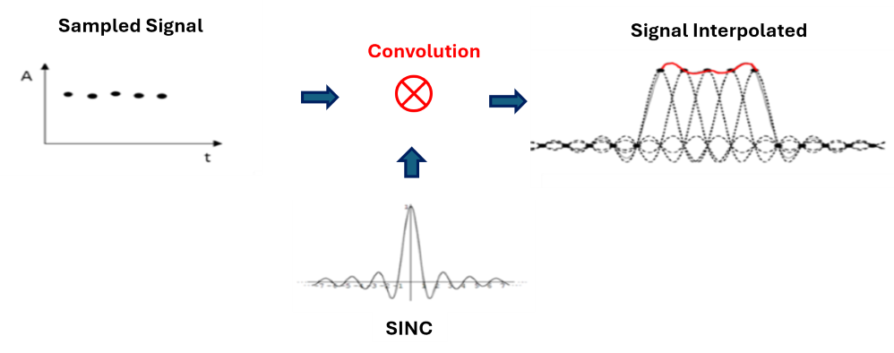
En la teoría, este proceso posee una reconstrucción perfecta. Pero el inconveniente se presenta en la imposibilidad de su implementación, ya que la función SINC se extiende desde \(-\infty \) a \( +\infty \). Como esto no es posible a los fines prácticos, debemos acotarla en el tiempo. Este recorte temporal de la función, tendrá su impacto en el dominio de la frecuencia y será en que la respuesta del filtro pasa bajo ya no será la ideal y eso traerá “distorsiones” en la reconstrucción de la señal analógica. Y son precisamente esos errores lo que hacen que la señal reconstruida sea en mayor o menor medida, igual a la original.
En el Apendice III, encontrarán una demostración práctica del impacto de la longitud de la SINC en el proceso de reconstrucción.
6. ¿Es real el efecto?
Habiendo entendido el motivo de las formas “raras” que vemos en la reconstrucción de determinadas frecuencias, cabe preguntarnos si este es un efecto real o es simplemente un efecto visual. La respuesta es que este efecto es tan real como el mismo audio digital, por lo que no es solamente una percepción visual, sino también auditiva.
Y comprobar esto no es nada difícil. Simplemente se puede crear una sesión en alguna frecuencia de Nyquist que sea audible, generar una señal senoidal (o cualquier señal periódica) y escuchar. Por ejemplo, podemos hacer la prueba con una Fs = 8000Hz y con un generador crear senoidales a una F = 3998 Hz y F=3999Hz.
Habiendo llegado hasta aquí (y ojalá comprendido la explicación) … ¿qué esperarías escuchar? (audios de 4 seg, cuidado con el volumen)
7. Impacto en el audio digital
Pero si esto es así… ¿cómo no es un completo desastre todo lo que escuchamos a través del audio digital?
Bueno, hay que tener en cuenta dos aspectos importantes que se aplican al proceso explicado:
1) Esto, si bien no es exclusivo, es notorio en señales periódicas. El efecto de batido, se evidencia al tener repeticiones periódicas de las muestras en los ciclos de la señal (tal como lo explicado en 4).
2) El efecto es extremadamente notorio en frecuencias muy próximas a Nyquist y va perdiendo impacto a medida que me alejo de la misma. Si mi frecuencia de Nyquist es de 22050 Hz, el efecto empieza a desvanecerse a partir de los 20 kHz hacia abajo. O sea, son frecuencias elevadas para una audición promedio del humano.[6][6]
En la Fig 15 podemos evidenciar el impacto en relación con la frecuencia analógica a muestrear. A medida que la frecuencia F se aleja de \({\large\frac{F_s}{2}}\), el efecto se va diluyendo (el batido va perdiendo intensidad).
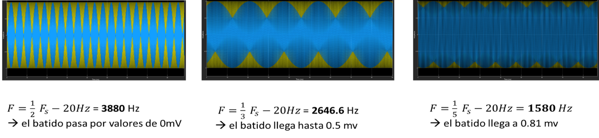
Por estos motivos, aunque resulta curioso verlo en la pantalla de los DAWs, este efecto no resulta ser un problema para el propósito del audio digital.
Apéndice I: Mediciones
A continuación se exhiben las mediciones realizadas a la salida de una placa de sonido Marca: Universal Audio - Modelo: Apollo Twin. El instrumento de medición utilizado fue un Tektronix TBS 1052B, a distintas frecuencias de muestreo y de señal.
El proceso de medición consistió en generar senoidales a distintas frecuencias y medir la salida de audio analógica de la placa. Eso es lo que realmente reproducirán los parlantes.
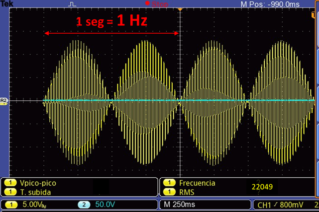
batimento a una frecuencia de 2 Hz. Observar que la frecuencia de cada componente es de 1 Hz.
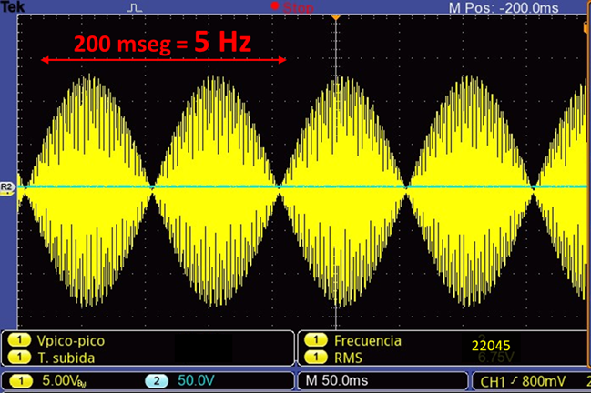
batimento a una frecuencia de 10 Hz. Observar que la frecuencia de cada componente = 5 Hz.
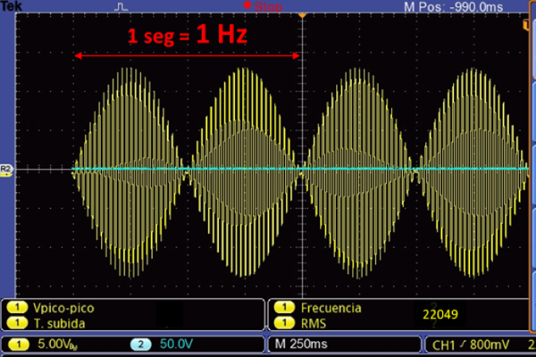
batimento significativo. Se confirma que alejándose de la frecuencia de Nyquist el efecto de batimento disminuye.
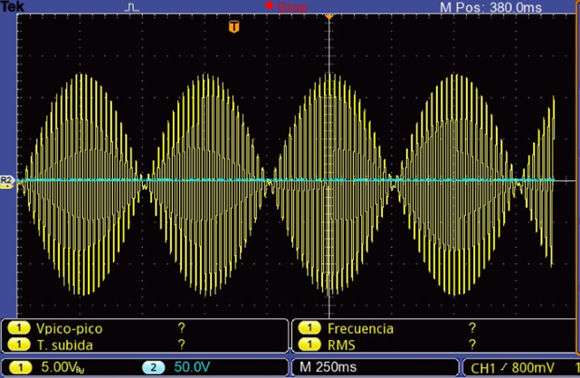
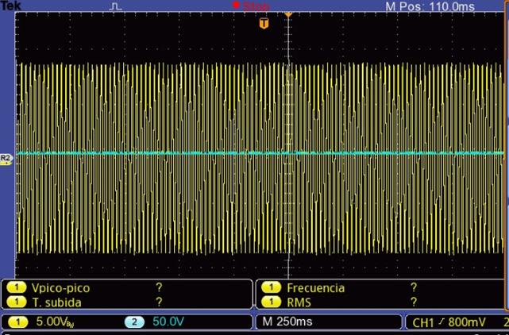
Se puede apreciar el impacto para una misma frecuencia a distintas frecuencias de muestreo.
Para 88100Hz el impacto es despreciable, mientras que para 44100Hz es notorio.
Apéndice II: Producto de dos señales analógicas
Según la identidad trigonométrica:
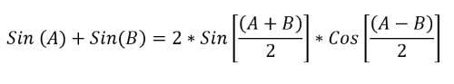
podemos crear el mismo efecto de batido, pero multiplicando señales senoidales (en vez de sumarlas) modificando las frecuencias para cumplir con dicha identidad.[7][7] En nuestro ejemplo de A=1000Hz y B=1100Hz, las nuevas frecuencias para lograr el mismo efecto serían:
\( F_1 ={\large \frac{A + B}{2}} = 1050\,\text{Hz} \)
\( F_2 ={\large \frac{A - B}{2}} = 50\,\text{Hz} \)
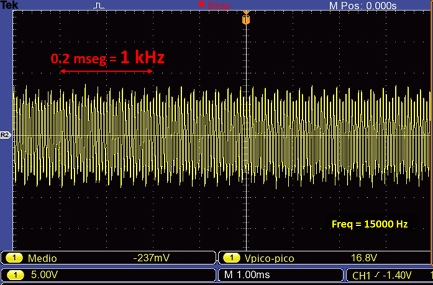
Fig 20. Efecto de batido a través del producto de señales
Notar que la frecuencia del batido, sigue siendo 100Hz (tal como en el ejemplo de la suma) que es, precisamente, el doble de la frecuencia de la moduladora.
Apéndice III: Proceso de Interpolación de una señal muestreada.
Se ha mencionado que, aún cumpliendo con el criterio de Nyquist, tendremos una reconstrucción imperfecta de la señal, debido a la limitante de tener que truncar la señal SINC en el proceso de convolución. También hemos hecho referencia que ese fenómeno, es notorio en frecuencias cercanas a Nyquist y que, ha medida que me nos alejamos de la misma, el efecto se va diluyendo.
A continuación, se muestran 3 gráficos en las que podemos apreciar cómo aumentando el tiempo de la SINC, la reconstrucción mejora notablemente.[8][8]
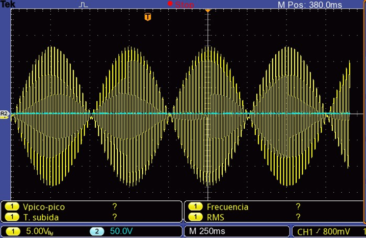
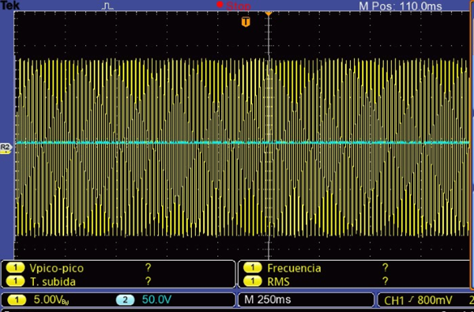
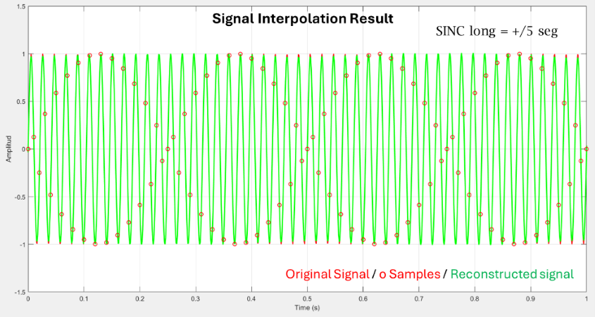
a) SINC_span=+/- 50 mseg; b) SINC_span=+/- 500 mseg ; c) SINC_span=+/- 5 seg
El ejemplo presentado corresponde a una \( F = 48\,\text{Hz} \) y \( F_s = 100\,\text{Hz} \). Si bien estos no son valores utilizables en audio, es perfectamente válido para demostrar el efecto en cuestión.
Referencias
[1] La frecuencia de batido es la diferencia de frecuencias entre ambas señales. Sin embargo, la frecuencia de cada una de las ondas entrelazadas, es la mitad, o sea, 50Hz para nuestro caso. Esta relación será distinta en el efecto subNyquist que veremos en las próximas secciones.
[2] El método de interpolación de Matlab es lineal, y es por ese motivo que vemos trazos rectos uniendo las muestras.
[3] \(\large \frac{m}{n} \) ≤ 0.5 para evitar el efecto de aliasing.
[4] Existen varios métodos de interpolación como Lagrange (orden N), cubic splines (3er orden), Bezier splines, etc.
[5] Algunos softwares permiten elegir el modo gráfico de interpolación (p.e Ozone RX)
[6] Adicionalmente, el batido es solo percibido si su frecuencia es de muy bajo valor (no más allá de unos pocos Hertz).
[7] Este es el principio utilizado en el proceso de modulación por amplitud (AM). Una señal modulante de baja frecuencia (p.e la voz) modula a una portadora (modulada) de bastante mayor frecuencia para su transmisión.
[8] Esto es producto de una simulación, pero que bien refleja el concepto teórico afirmado. Obviamente no podemos trasladar esto al mundo real, ya que en los conversores DA, este tiempo no es modificable
Software y Hardware utilizado
Las simulaciones realizadas en el presente trabajo se han desarrollado en MATLAB™.
Placa de Sonido Universal Audio, Apollo Twin™.
Instrumento de medición Tektronix™ TBS 1052B.
Bibliografía
- “Sub-Nyquist artefacts and sampling moiré effects” - Isaac Amidror, Ecole Polytechnique Fédérale de Lausanne (EPFL), Feb.Concurrent2015
- “Analyzing the Sampling-Induced Beat Frequency Effect” - Kerry Schutz – Mathwork, Oct 2021
- “Bandlimited Interpolation” – Julius O. Smith III - CCRMA – Standford Univ, 2016 May
- “Modern Sampling: A Tutorial”. Jamie A.S. Angus – AES Vol 67, No 5, 2019 May
Autor: Pablo Panitta / Soundins